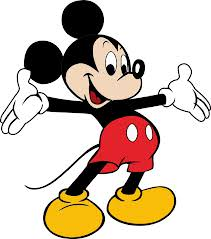
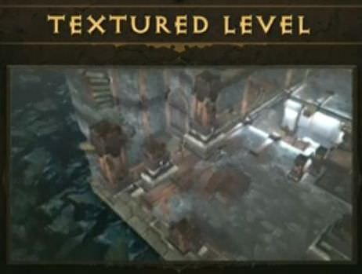

Bonjour :)
Présentation
David Leuliette
Développeur front-end • http://davidl.fr
Formateur • http://omneo-solutions.com
Création de site internet
Processus & étapes de conception
Smart glass project
Juin 2012 Google annonce officiellement la sortie de la version développeur
Smartthings

Projet backed sur kickstarter en 2012
Le web est un média
en perpétuel renouvellement
Comment être :
- Éfficace ?
- Productif ?
Dans un contexte
- Multi-appareils
- Multi-résolutions
- Multi-navigateurs
Less is more
Mies van der Rohe
Architecte Allemand, principalement connu pour ses conceptions au formes claires, épurées & directement compréhensibles par sa transparence.
Le web est malade
A vouloir fournir trop d'informations aux utilisateurs on oublie l'essentiel :
L'internaute cherche un contenu de qualité & accessible
Génération zapette
Les gens scannent votre page s'ils ne trouvent pas l'information en moins d'une seconde, ils quittent votre site
En 2014 l'accès à internet se fera majoritairement par un smartphone
Vous devez penser mobile
dès maintenant !
Les différentes
étapes de la
création d'un site
internet
Brainstoming
Rassembler les différents acteurs du projet pour un échange d'idées
La méthode Disney
Méthode de créativité qui se base sur le jeu de rôle.
Une ou plusieures personnes considèrent et examinent un problème selon trois points de vue.
La chambre du rêve
Orientée et enthousiaste, se tient à un jugement pratique, une idée ou une analyse.
La Chambre de la réalité
Point de vue pragmatique-pratique, développe des plans d'activité et examine les étapes de travail nécessaires, - mécanismes et conditions
La chambre de la critique
Provoque et examine les normes des autres. L'objectif est une critique constructive et positive qui aide à identifier les sources d'erreurs possibles.
Extrait d'un article Wikipédia
Méthode agile de gestion de projet
Développer de façon itérative & simple
SCRUM
- Team Poker
- Daily meeting
- Sprint
- Debrieffing
Organisation de développement de produits complexes sur wikipedia
Conseil de lecture : Maîtriser les risques de votre projet
Création / Gestion / Refonte
du contenu
Une étape très importante à ne pas sous estimer
Prendre le temps d'architecturer son contenu
Métiers
- Chef de projet
- Rédacteurs Web
- User eXperience Designer, ergonome
- Architecte d'information
Une liste complète des métiers sur metiers.internet.gouv.fr
Outils
- Tableau Blanc
- Post-It
- War room
- pearltrees.com
Conception / croquis
Architecture des pages
Prototypages rapides
Je dessine et je publie sur responsivewireframe.tumblr.com
Miniatures
Architecture de la navigation
Création du sitemap : contenu du site web
Outil à bookmarquer : Slickmap
Design du contenu
Il faut mettre votre contenu au cœur de votre processus de conception.
En travaillant à partir de votre contenu réel vous gagnez du temps lors de l'intégration et évitez la "pollution".
Faire en sorte que votre contenu soit bien structuré sémantiquement ? Une bonne préparation pour votre référencement.
Gather Content
gathercontent.com
Surfer sur internet = livre dont vous êtes le héro
User flow
Navigation des internautes : actions possibles de vos visiteurs

Métiers
- User Interface Designer
- Webdesigner
- Ergonome
Une liste complète des métiers sur metiers.internet.gouv.fr
Outils
- Papier + crayon
- Balsamiq
- uxpin
Wireframe
maquette fil de fer
Pour bien commencer
- Quel est le contenu de cette page ?
- Comment les différents éléments de contenu sont liés les un aux autres ?
- Comment pourraient-ils éventuellement être organisés ?
- Comment l'utilisateur peut interagir avec ce contenu ?
La grille
Comme la presse papier, le web repose sur un système de grille
Le nombre d'or
Le nombre d'or est la proportion la plus couramment utilisée dans la conception de livres
Les Grecs l'utilisaient abondamment, et cela se voit même dans les ouvrages de Gutenberg
Développer un système
960 grid system

Problème de l'introduction : Comment s'adapter aux différentes résolutions ?
Prendre en compte les points de rupture
Point de rupture pour mobile
Conseil du pro
Il ne faut pas concevoir les différentes pages : il faut concevoir un système
Design patern
Patron de conception
Structure des pages
Se concentrer uniquement sur le positionnement des éléments
Logo + header + contenu + footer
Interactions / navigation des pages
Header (menu avec différents liens)
Footer (répétition navigation principale + voir éléments cachés)
Exemple : whitehouse.gov
Menu simple en header
Menu développé en footer
L'importance de la typographie
Sur un site web 80% du contenu est du texte
Il faut privilégier l'expérience de lecture à la "décoration"
Vous pouvez créer un contraste dans du texte, grâce à l'utilisation réfléchie :
- échelle
- Taille
- Poids
- Couleur
Pour les polices web sécurisée voir cet article
Le service de webfonts par google
A lire un article sur la création d'une échelle modulaire
Et la couleur dans tout ça ?
Création des tableaux
Léonard de vinci
- Analyse mathématique
- Dessin des sujet
- Peinture

Techniques de rendu 3D - Grayboxing
Techniques de rendu 3D- Grayboxing
Techniques de rendu 3D- Grayboxing
Le choix des couleurs vient tardivement dans le processus de création
Outils
Moodboard
Objectif : Trouver avec le client un univers qui lui correspond
Bibliothèque de matériaux de référence (photos, dessins, livres, ...)
Patron de conception
aka Design pattern
#rappel
Il faut créer un système
Faire une liste de l'intégralité des éléments du site :
- Menus de Navigation
- Listes à puce, listes ordonnées
- Pagination
- Fils d'arianne
Voir le guide des styles de github
Conseil du pro
La différence entre les boutons et les liens
La suite est diponible sur mon blog

Pour information
Méthode développement moderne MVC
Outils
- Extention Photoshop Guide
- PixelWindow
- Fireworks protip :hover
- PNG gauntlet
Création de site internet adaptatif
aka Responsive design workflow
Méthode du XXème siècle
pour la création de contenu web
Images "piratées" depuis ce blog
Méthode moderne
à prendre en compte aujourd'hui pour ne pas râter le virage
Exemple site optimisé IE6
Les icones au XXIème siècle
Aujourd'hui
Techniques des sprites
Préparé pour l'avenir
Pack Icones = police de caractère
Les métiers du developpement web
- Intégateurs web
- Développeurs front-end
- Développeurs back-end
Ignorer le design mobile ?
Proposition de refonte du louvre-lens
Outils
- Firefox
- Firefox Developer Edition
- Chrome
- Safari
- Opera
- Internet explorer
Mise en production
Hébergement
Créer rapidement votre portfolio en 6 étapes
- Nom de domaine
- Nom du site internet
Hébergement
Métiers
Administrateur réseau
Outils
- Filezilla
- Git
Gestion
promotion du site
ajout de contenu
Métiers
- Référenceur
- Community manager
Outils
- Google analytics
- Crazy egg
Technologies de base du Web
Le Web et ses évolutions
- Le web social
- Le web local
- Le web mobile
- Le web des objets
Les technologies Web mobile
Développement natif
Il faut suivre les recommandations
Développement web
Il faut suivre les standards ouverts